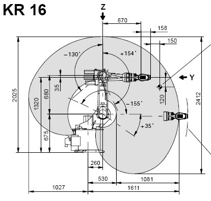
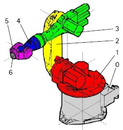
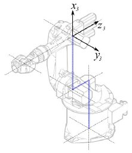
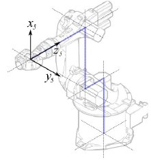

|
| Argomento |
|---|
| Robot |
| Livello di difficoltà |
| Intermedio |
| Tempo di esecuzione |
| Autore |
| Versione di FreeCAD |
| File di esempio |
Questo articolo descrive come importare in FreeCAD un robot industriale standard a 6 assi a scopo di simulazione.
La descrizione è conforme alla Convenzione di Denavit-Hartenberg per i parametri, come descritto anche nel libro Introduction to Robotics di John J. Craigs.
Esempio Kuka
|  |  | 
|
{kind=link}
{kind=link}
Cinematica
| Segmento | Parametro | Descrizione |
|---|---|---|

|
Configurazione di base | |

|
<math>\theta_{1} = q_{1}</math> <math>d_{1} = 675 mm </math> <math>a_{1} = 260 mm </math> <math>\alpha_{1} = −90</math>° |
Segmento 1 |

|
<math>\theta_{2} = q_{2} - 90</math>° <math>d_{2} = 0 mm </math> <math>a_{2} = 680 mm </math> <math>\alpha_{2} = 0</math>° |
Segmento 2 |
|  |
<math>\theta_{3} = q_{3} </math> <math>d_{3} = 0 mm </math> <math>a_{3} = 0 mm </math> <math>\alpha_{3} = 90</math>° |
Segmento 3 |

|
<math>\theta_{4} = q_{4} </math> <math>d_{4} = -670 mm </math> <math>a_{4} = 0 mm </math> <math>\alpha_{4} = -90</math>° |
Segmento 4 |
|  |
<math>\theta_{5} = q_{5} </math> <math>d_{5} = 0 mm </math> <math>a_{5} = 0 mm </math> <math>\alpha_{5} = 90</math>° |
Segmento 5 |

|
<math>\theta_{6} = q_{6} </math> <math>d_{6} = 0 mm </math> <math>a_{6} = -158 mm </math> <math>\alpha_{6} = 180</math>° |
Segmento 6 |
{kind=link}
{kind=link}
Questo porta alla seguente tabella:
| <math>i</math> | <math>\theta</math> | <math>d</math> | <math>a</math> | <math>\alpha</math> |
|---|---|---|---|---|
| 1 | q1 | 675 mm | 260 mm | -90° |
| 2 | q2 - 90° | 0 mm | 680 mm | 0° |
| 3 | q3 | 0 mm | 0 mm | 90° |
| 4 | q4 | -670 mm | 0 mm | -90° |
| 5 | q5 | 0 mm | 0 mm | 90° |
| 6 | q6 | -158 mm | 0 mm | 180° |
Dato che i robot Kuka non hanno tutti gli assi a 0 nella posizione a L disegnata, si devono modificare gli assi 2 e 3 di 90 °.
| <math>i</math> | <math>\theta</math> | <math>d</math> | <math>a</math> | <math>\alpha</math> |
|---|---|---|---|---|
| 1 | q1 | 675 mm | 260 mm | -90° |
| 2 | q2 | 0 mm | 680 mm | 0° |
| 3 | q3 - 90° | 0 mm | 0 mm | 90° |
| 4 | q4 | -670 mm | 0 mm | -90° |
| 5 | q5 | 0 mm | 0 mm | 90° |
| 6 | q6 | -158 mm | 0 mm | 180° |
Nella scheda tecnica si trovano ulteriori informazioni sugli assi:
{kind=link}
Questo permette di compilare la tabella completa:
| <math>i</math> | <math>\theta</math> | <math>d</math> | <math>a</math> | <math>\alpha</math> | <math>\theta_{min}</math> | <math>\theta_{max}</math> | Axis Speed |
|---|---|---|---|---|---|---|---|
| 1 | 0 | 675 | 260 | -90 | -185 | 185 | 156 |
| 2 | 0 | 0 | 680 | 0 | -155 | 35 | 156 |
| 3 | - 90 | 0 | 0 | 90 | -130 | 154 | 156 |
| 4 | 0 | -670 | 0 | -90 | -350 | 350 | 330 |
| 5 | 0 | 0 | 0 | 90 | -130 | 130 | 330 |
| 6 | 0 | -158 | 0 | 180 | -350 | 350 | 615 |
Rappresentazione visiva
FreeCAD può generare una soddisfacente rappresentazione visiva della tabella cinematica. Se si desidera una visione più vicina alla realtà è possibile utilizzare per la simulazione un file VRML con la forma del robot. Ad esempio, Kuka offre dei file VRML per i suoi modelli. In FreeCAD il file VRML viene caricato durante la creazione di un robot specifico. Per consentire a FreeCAD di muovere gli assi, si deve editare il file VRML e inserire degli speciali nodi di trasformazione che FreeCAD possa trovare e manipolare.
Anche questo esempio si riferisce a un Kuka KR 16. Cominciando dalla riga 1:
#VRML V2.0 utf8
#
# This VRML97 file was exported using eM-Workplace
# (c) Tecnomatix Technologies GmbH & Co. KG
# Heisenberg-Bogen 1
# D-85609 Aschheim-Dornach
# GERMANY
#
#Background
#{
# skyColor [0.752941 0.752941 0.752941]
#}
Transform
{
#rotation 1 0 0 -1.5707963
#scale .001 .001 .001
children
[
DEF AOBJ_0001_000_TRAFO Transform
{
children
[
...
Si vede che questo file è stato esportato con un software di simulazione di robot chiamato Tecnomatix. Rimuovere questa nota e inserire l'URL da cui si è ottenuto il file, perché Tecnomatix non ha nessun copyright sul contenuto del file. E' solo un convertitore! Iniziare con il rimuovere il nodo Background. Quindi rimuovere i nodi rotation e scale per ottenere il modello in mm e l'asse Z verticale.
Poi, proprio alla fine:
] }
] }
] }
]
}
#ROUTE SENS_04_OBJ.rotation_changed TO AXIS_04_OBJ.rotation
#ROUTE SENS_27_OBJ.rotation_changed TO AXIS_27_OBJ.rotation
#ROUTE SENS_32_OBJ.rotation_changed TO AXIS_32_OBJ.rotation
#ROUTE SENS_44_OBJ.rotation_changed TO AXIS_44_OBJ.rotation
#ROUTE SENS_46_OBJ.rotation_changed TO AXIS_46_OBJ.rotation
#ROUTE SENS_49_OBJ.rotation_changed TO AXIS_49_OBJ.rotation
#DEF AnySIMTimer TimeSensor
#{
# cycleInterval 1.000000
# loop TRUE
#}
Togliere il segno di commento a TimeSensor e alle 6 rotte. Questo 6 righe indicano dove si trova l'asse effettivo del robot! Ricercare AXIS_04_OBJ e arrivare a questa parte del file:
...
Transform { rotation 1 0 0 1.570796 children [
DEF SENS_04_OBJ-0001 CylinderSensor
{
diskAngle 1.570796
minAngle -3.228859
maxAngle 3.228859
offset 0.000000
}
DEF FREECAD_AXIS1 Transform { rotation 0 1 0 0 children [
DEF AXIS_04_OBJ-0001 Transform
{
children
[
Transform { rotation 1 0 0 -1.570796 children [
DEF AOBJ_0001_003_TRAFO Transform
{
rotation 1.000000 0.000000 0.000000 3.141593
translation -600.000000 500.000000 300.000000
children
[
...
Dove si deve inserire immediatamente sopra la definizione di questo nodo la riga "DEF FREECAD_AXIS1 Transform { rotation 0 1 0 0 children [" che è l'ancora che FreeCAD utilizza per spostare questo asse.
Poi fare la stessa cosa per FREECAD_AXIS2,FREECAD_AXIS3,FREECAD_AXIS4,FREECAD_AXIS5 e FREECAD_AXIS6. Non dimenticare le parentesi di chiusura alla fine del file e il gioco è fatto!
Ora è possibile caricare il file VRML per installare il robot con:
App.activeDocument().addObject("Robot::RobotObject","Robot")
App.activeDocument().Robot.RobotVrmlFile = "C:/_Projekte/FreeCAD0.9_build/mod/Robot/Lib/Kuka/kr16.wrl"
Che dovrebbe dare questo risultato:

KR 210
| <math>i</math> | <math>\theta</math> | <math>d</math> | <math>a</math> | <math>\alpha</math> | <math>\theta_{min}</math> | <math>\theta_{max}</math> | Axis Speed |
|---|---|---|---|---|---|---|---|
| 1 | 0 | 750 | 350 | -90 | -185 | 185 | 156 |
| 2 | 0 | 0 | 1250 | 0 | -155 | 35 | 156 |
| 3 | - 90 | 0 | 0 | 90 | -130 | 154 | 156 |
| 4 | 0 | -1100 | 0 | -90 | -350 | 350 | 330 |
| 5 | 0 | 0 | 0 | 90 | -130 | 130 | 330 |
| 6 | 0 | -230 | 0 | 180 | -350 | 350 | 615 |
KR 500
| <math>i</math> | <math>\theta</math> | <math>d</math> | <math>a</math> | <math>\alpha</math> | <math>\theta_{min}</math> | <math>\theta_{max}</math> | Axis Speed |
|---|---|---|---|---|---|---|---|
| 1 | 0 | 1045 | 500 | -90 | -185 | 185 | 156 |
| 2 | 0 | 0 | 1300 | 0 | -155 | 35 | 156 |
| 3 | - 90 | 0 | 0 | 90 | -130 | 154 | 156 |
| 4 | 0 | -1025 | 0 | -90 | -350 | 350 | 330 |
| 5 | 0 | 0 | 0 | 90 | -130 | 130 | 330 |
| 6 | 0 | -250 | 0 | 180 | -350 | 350 | 615 |